AIAD is a disciplined methodology that combines AI acceleration with human engineering governance — so your teams ship faster while your architecture, knowledge and quality stay intact.
Built for serious engineering teams who can't afford to break what already works.
Decades of evolution leave behind fragmented business logic, outdated documentation and architectures no one fully understands anymore — exactly when companies need to move faster than ever.
Senior developers leave, documentation diverges from reality, and critical business rules stay trapped inside the code.
Full rewrites stall production, blow budgets and frequently fail. Yet doing nothing is no longer an option.
Raw AI code generation accelerates output but multiplies inconsistency, drift, and long-term instability.
AIAD combines AI-assisted analysis, incremental modernization, architectural governance and continuous knowledge reconstruction into a single disciplined workflow.
AI explores your legacy system to surface hidden business logic, dependencies and real operational behavior.
Enterprise knowledge is rebuilt and synchronized from the living system itself, not from outdated documents.
Migrations and refactorings happen incrementally — old and new coexist, production never stops.
Architecture, boundaries and design decisions stay under human control, ensuring sustainability.
A disciplined pipeline: business specs, architecture, coding norms and integration tests feed AI-assisted generation — producing artefacts, executable tests, and proof of execution that loop back into the system.

Code generation, refactoring, migration, testing, dependency analysis — AI is an extraordinary productivity amplifier when it operates inside clear engineering boundaries.
System boundaries, design decisions, consistency and technical governance remain owned by engineers. Sustainable software requires discipline.
Your legacy is not a problem to delete — it's years of business knowledge. AIAD helps extract it, document it, and modernize incrementally.
Code, documentation and AI-assisted analysis evolve together — creating a continuously updated source of truth instead of stale docs.
The Humanizer Phase is not a single post-processing step — it is a continuous discipline applied at every stage of the AIAD flow. At each handover, a human engineer constrains the AI: trimming verbosity, simplifying outputs, enforcing structure, and rejecting noise before it propagates downstream.
Engineers constrain AI to produce minimal, unambiguous business specs — no padding, no speculative requirements. What's not validated is removed.
AI proposals are reviewed against real system boundaries. Humans cut alternatives, lock contracts, and keep the architecture small enough to fit in one head.
Each generated feature description is compressed by an engineer into a single readable document — actionable, not exhaustive.
Generated code and integration tests are simplified, deduplicated, named by humans. AI drafts; engineers own the final shape.
Execution logs and retro analyses are distilled into short, structured artefacts — drift, coverage, gaps — that humans can actually act on.
Only validated knowledge loops back into the system. The Humanizer Phase is the filter that prevents AI noise from compounding across iterations.
“Technology only creates value when humans can understand and use it effectively.”
The companies that succeed won't be those generating the most code. They will be those capable of preserving understanding, controlling complexity, modernizing safely, and turning knowledge into a long-term strategic asset.
Let's talk about your systems, your team, and how AIAD can help you move faster — safely.